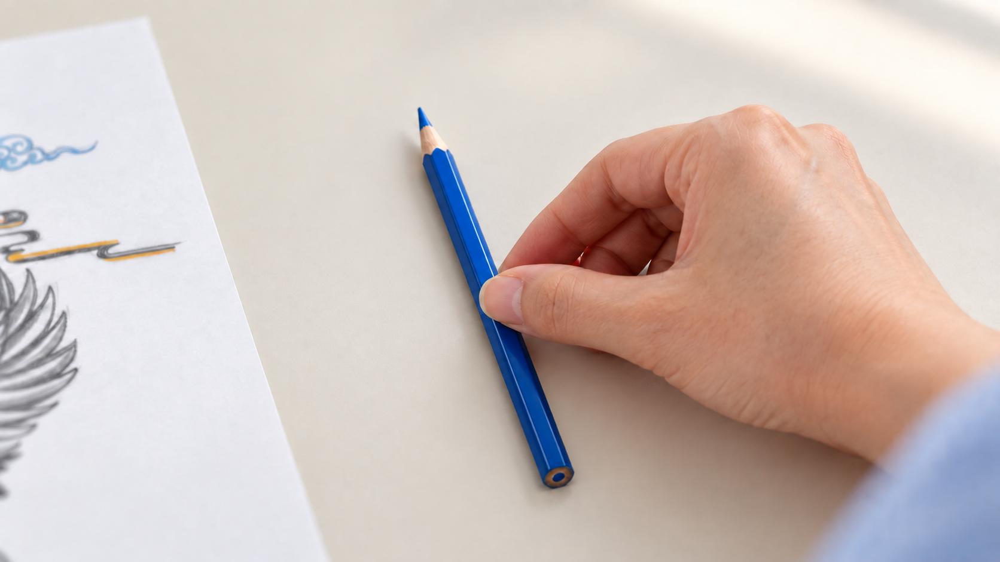

<!doctype html><html lang="ko"><meta charset="utf-8"><meta name="viewport" content="width=device-width,initial-scale=1"><title>GODO · V32 스토리보드</title><style>body{margin:0;background:#f5f3ef;color:#202330;font:16px/1.7 system-ui}main{max-width:1050px;margin:auto;padding:32px 20px}video,img{width:100%;border-radius:12px}h1{font-size:30px}a{color:#343d90}.meta{padding:18px;background:white;border-radius:12px}.shots{display:grid;grid-template-columns:1fr 1fr;gap:24px}figure{margin:0}figcaption{padding:10px 0}@media(max-width:700px){.shots{grid-template-columns:1fr}}</style><main><a href="index.html">홈페이지</a> · <a href="review-v8.html">완성 영상</a><h1>V32 · 손동작과 엔딩 수정</h1><p>작품 단독 엔딩, 느린 손동작, 도구의 자연스러운 배치를 반영했습니다.</p><div class="shots"><figure><figcaption><b>01 · 인물 클로즈업</b><br>확정된 시선과 표정 유지</figcaption></figure><figure><figcaption><b>02 · 앞치마 뒤 매듭</b><br>짧게 매듭을 정리</figcaption></figure><figure><figcaption><b>03 · 연필 첫 선</b><br>작은 동선 · 50% 속도</figcaption></figure><figure><figcaption><b>04 · 첫 파란색</b><br>색 영역 안에서 50% 속도</figcaption></figure><figure><figcaption><b>05 · 부분 채색</b><br>도구 각도와 간격을 자연스럽게 · 60% 속도</figcaption></figure><figure><figcaption><b>06 · 색연필 놓기</b><br>파란 색연필 하나 · 손의 재진입 제외 · 60% 속도</figcaption></figure><figure><figcaption><b>07 · 작품 단독 엔딩</b><br>정중앙 · 여백 확대 · 고정 카메라</figcaption></figure></div></main></html>